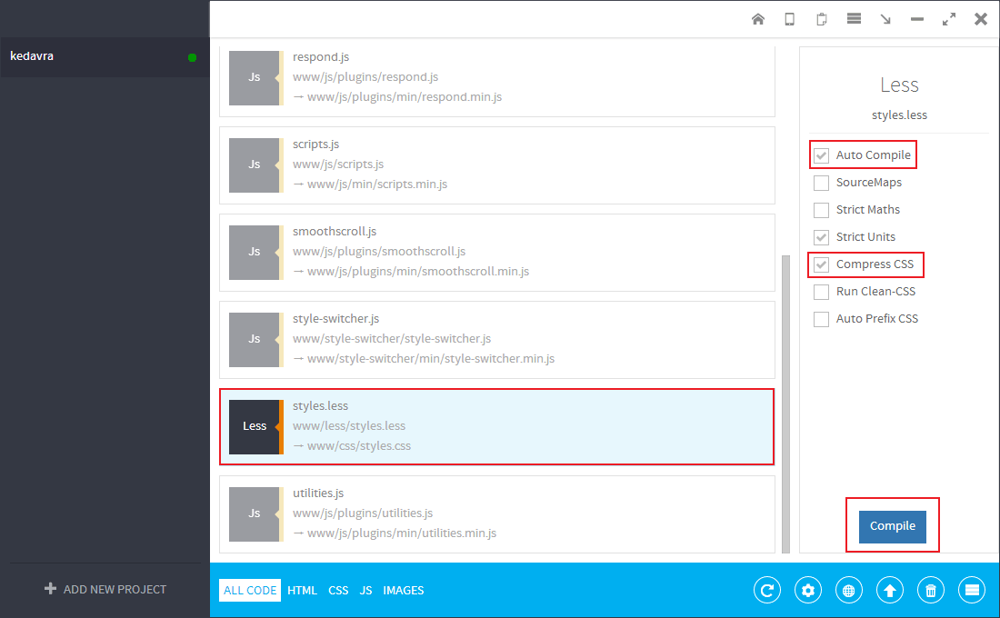

We developed a multifunctional theme for professionals who aim to create a lot of effective and versatile websites: from personal blogs, websites-portfolio and functional landing pages to commercial websites and large online-stores.
When Developing Kevadra theme we were guided by our long term online-business experience and by contemporary usability trends and trends of developing high conversion UIs.
Kedavra features 70+ pre-composed pages but you can easily create new with lots of customizable widgets and elements.
| File Path | Description |
|---|---|
| Main | Root folder |
| Main/PSD |
PSD Folder includes all .psd files. Please see the complete list of files here |
| Main/Kedavra | This folder includes all HTML,LESS, CSS, Javascript, Fonts and Image files of the template. |
| Main/Kedavra/index.html | This is the Presentation Home Page describing all features of Kedavra. +69 other pages |
| Main/Kedavra/css | This folder includes compiled and compressed version of CSS style.css. |
| Main/Kedavra/css/unminified | This folder includes compiled but uncompressed version of CSS style.css. |
| Main/Kedavra/css/colors | This folder holds all .css files with different color schemes. Each file has a color hex number in it's name. |
| Main/Kedavra/css/colors/unminified | This folder holds all uncompressed .css files with different color schemes. Each file has a color hex number in it's name. |
| Main/Kedavra/less | This folder includes all source .less (including Bootstrap less) files from which compiled style.css. |
| Main/Kedavra/js | This folder includes all .js files. To edit Javascript functionality of the template you need to modify scripts.js file. It also includes 2 subfolders: libs and plugins |
| Main/Kedavra/js/libs | This folder includes all JavaScript Libraries files like jQuery. |
| Main/Kedavra/js/plugins | This folder includes all jQuery Plugins used in this template. |
| Main/Kedavra/masterslider | This folder includes all styles of premium slider called Master Slider. |
| Main/Kedavra/img | This folder includes all graphic assets of the template. When you need to change images, slides, backgrounds, etc..this is the place to go. |
| Main/Kedavra/fonts | This folder includes Exclusive Bi-color Icon Font and Font Awsome generated Fonts. They are iconic fonts, that gives you customizable vector icons (more than 500 icons in total). For more information on how it works, please visit: Font Awsome Official Website |
In this block you will find all necessary information regarding Kedavra HTML structure, changing images, icons, building new pages.
Please look at code below. It represents general structural blocks that are seen on every page. This blocks include header, navigation / off-canvas mobile navigation, footer and content area.
<html>
<head>
............................................................................................
Here we write meta tags, link css files, modernizr library, 3rd party APIs (like Google maps)
............................................................................................
</head>
<body>
<!--Off-Canvas-->
<div class="off-canvas-wrap" data-offcanvas>
<div class="inner-wrap">
<!--Off-Canvas Menu-->
<aside class="left-off-canvas-menu">
<div class="mobile-navi">
Here goes mobile navigation. It's hidden from view in desktop mode,
but when window size less than 1024px (can be changed) we can call it by clicking on toggle.
</div>
</aside>
<!--Site Layout-->
<div class="site-layout">
If you add class "boxed" it wraps the whole document in a box, than you can simply add pattern
background to body or leave it white. Please note in a "boxed" mode header doesn't stick to the top.
.........................................................................................
<!--Header Toolbar-->
<div class="header-toolbar">
.........................................................
</div>
<!--Header-->
<header class="header sticky">
You can optionally add class: "sticky", "transparent", "scroller" for different header layouts.
.............................................................
</header>
<!--Page Content-->
<div class="page">
Here goes page content.
.............................................................
</div>
<!--Footer-->
<footer class="footer">
Here goes footer content.
.............................................................
</footer>
</div>
</div>
</div>
</body>
</html>
To change images, slides or background you need to go to Kedavra / img / folder. It is devided into subfolders. Each contains appropriate graphic assets. See the complete list below:
<body>.*In your copy most of images are replaced with placeholders with sizes. Make sure you follow this guides when cropping your own images.
As mentioned dabove in Kedavra we used self-made bi-color font icons along with FontAwesome icons. So in total you have 500+ icons to choose from.
Adding Kedavra bi-color icon:
<i class="icon icon-iconName"></i>
Adding FontAwesome icon:
<i class="fa fa-iconName"></i>
You can find complete list of Kedavra icons here.
To see complete list of FonAwesome icons visit http://fortawesome.github.io/Font-Awesome/icons/
In order to switch to boxed layout mode you need to add "boxed" class to the <div class="site-layout">. See the code below:
<div class="site-layout boxed"> ...................................................... </div>
In Boxed mode you can add background pattern to <body>.
<body style="background-image:url(img/patterns/pattern-1.png);"> ...................................................... </body>
In Kedavra some interactive lements can be adjusted throught data-attributes. You dont need to do that inside weird Javascript functions.
This elements are:
<div class="percent-chart" data-percent="55" data-bar-color="#448956">
<div class="chart" data-fill="rgba(68,137,86,0.2)" data-lines="rgba(68,137,86,0.9)">
<div class="ui-slider" data-min-val="100" data-max-val="1000" data-start="600" data-step="50">
<span class="digit" data-number="130555">
If you do not need parallax effect on backgrounds simply remove "parallax" class from <body> tag.
In this section you will learn how to setup LESS environment, editing and compiling .less files, where to find uncompressed style.css, how quickly change color scheme.
Less is a CSS pre-processor, meaning that it extends the CSS language, adding features that allow variables, mixins, functions and many other techniques that allow you to make CSS that is more maintainable, themable and extendable.
For more information visit LESS official website.
For compiling LESS file into CSS we used software called "Prepros". Visit it's website at http://alphapixels.com/prepros/. Basic version is completely free and available for Mac and Windows.
| LESS File Name | Elements Inside |
|---|---|
| animations folder | Includes animate.less file - keyframe animations library. |
| bootstrap folder | All Bootstrap framework .less file. |
| card folder | Interactive credit card (Checkout Page) |
| colors folder | Colores.less file - for generating different color schemes. |
| font-awesome folder | FontAwesome icons .less files. |
| icons folder | Kedavra exclusive bi-color icons .less files. |
| ihover folder | Interactive hover effects. |
| lightgallery | lightGallery plugin .less files. |
| variables.less | File that holds all variables. There you can globally change colors, font-sizes, margins, paddings, etc... |
| scaffolding.less | Body styles, utility classes, page container. |
| types.less | Headings, paragraphs, lists, links, blockquotes styles, etc... |
| header.less | Header styles including different header types: sticky, transparent, scroller (one-page). |
| footer.less | Footer styles. |
| navi.less | Main navigation (menu) styles including collapsed state (off-canvas mobile navigation). |
| buttons.less | Buttons styles (normal and outlined buttons). |
| forms.less | Form elements styles |
| mixins.less | Mixins mix properties from existing styles. |
| home.less | Styles of all elements of Home pages: Hero Slider, Hero Static, Hero Fullscreen, Fullwidth Image Banner, Category Bars, Category Tiles. |
| shop.less | Styles include: Catalog Grid / List Layouts, Shopping Cart, Color Switcher, Size Switcher, Single Product Tools, Info Tile Radios, Tracking Pag, Delivery Methods, Purchase History, PayPal Button. |
| blog.less | Includes: Recent Posts / List View Posts / Search Results, Blog Layouts (Grid / List), Post Controls / Tools, Single Post, Posts Archive List. |
| pages.less | Includes: Specialty Pages 404 / 505 Page, Login / Sign Up page, Search Page, Team Page, Team Member Profile / Portfolio Single, FAQ Page, User Account Page, Event Schedule. |
| sidebar.less | Sidebar Widgets (Blog, Shop). Includes: Sidebar general styles, Featured Posts Widget, Blog Categories Widget, Search Widget, Subscribe Widget, Shop Categories / Links Widget, Shop Filters, Shopping Cart Content Widget, Shopping Cart Totlas, Coupone Field, Sidebar Button (In mobile view scrolling to sidebar). |
| modals.less | Modal dialog styles. |
| widgets.less | Includes: Partial View Slider, Display Slider, Staff 3D Carousel, Master Slider Captions, Product Showcase Slider, Single Product Slider, OWL Carousel, Logo Carousel, Packages Carousel, Tabs Widget, Image Tabs, Panels / Accordion, Google Maps Widget, Info Box Widget, Info Banner Widget, Info String, Pricing Plans, Harmonic Widget, Gallery Grid Filters, Massonry Grid, Isotope Filter Animations, Animated Digits, Interactive Chart, Countdown Widget, Animated Percents Chart (Skills), Tile Buttons (FAQ), Thumbnails, 3D Image Effect / 3D Thumbnail Effect, Thumbnail Zoom Hover, Toolbox, Breadcrumbs, Sorting, Pagination, Follow Buttons / Marketplace Buttons, Date Picker, Info Block / Banners, Featured Icons Block, Sticky Buttons (Quick Mail, Scroll Up), UI Slider Widget (Range Slider), |
For those who for some reason do not like to work with LESS we prepared separate uncompressed style.css. It can be found in css/unminified folder.
There are 3 possible ways to change color scheme of the whole template.
1. The most quick and easy way is to go to Kedavra / less / variables.less find variable @brand-primary and change hex number. Make sure you re-compile styles.less in order all changes take effect.
2. Make the same changes as in the first variant but this time in Kedavra / less / colors / color.less file. Than compile color.less into color.css and link it right below the main style.css in <head> section of the document (on every page!).
3. Link one of the predefined color.css files in <head> section of the document (on every page!) below main style.css. You can also edit directly color.css file i order to create your unique color scheme.
<!--Kedavra Stylesheet--> <link href="../css/styles.css" rel="stylesheet" media="screen"> <!--Kedavra Color Scheme--> <link href="css/colors/color-448956.css" rel="stylesheet" media="screen">
In order to customize Kedavra Javascript components you need to go to Kedavra / js / scrits.js. This file holds all custom javascript for the template as well as all plugin initialisations and options.
While creating this template we used some Javascript (jQuery) plugins to extend its functionality:*
While creating this template we used some Javascript (jQuery) plugins to extend its functionality:*
jQuery v1.10.2 - most popular feature-rich JavaScript library.
jQuery Easing v1.3 - add-on for jQuery to create nice easing effects.
Modernizr - JavaScript library that detects HTML5 and CSS3 features in the user’s browser.
Respong.js - script enables responsive web designs in browsers that don't support CSS3 Media Queries - in particular, Internet Explorer 8 and under.
noUISlider - jQuery Range Slider.
Master Slider - Responsive Premium Touch Swipe Slider
Easy Pie Chart - jQuery plugin to render and animate pie charts with the HTML5 canvas element.
iCheck - Customized Checkboxes and Radio Buttons for jQuery.
jQuery Waypoints - jQuery plugin that makes it easy to execute a function whenever you scroll to an element.
jQuery Validate - Clientside Form Validation Plugin.
OWL Carousel - Responsive touch enabled jQuery carousel slider.
Isotope - jQuery plugin for categorizing, sorting, and filtering a responsive grid of items.
jQuery lightGallery - lightweight jQuery lightbox gallery for displaying image and video.
Stellar.js - jQuery plugin for creating Parallax effect.
The Final Countdown - A simple and html agnostic date countdown plugin for jQuery.
*To get more detailed information about how to use / customize these plugins please visit their official websites.
Please be informed that we DO NOT provide support to any third party plugin's. We can only answer simple usage questions or issues related to incompatibility with the template.
If you want to set time in Countdown clock you need to go to Kedavra / js / scripts.js to section called "Countdown Widget" and edit lines in bold.
// Under Construction Page Timer
if($('#timer1').length > 0) {
$('#timer1').countdown('2014/12/20', function(event) {
$(this).html(event.strftime('%D : %H : %M : %S'));
/*Time Format String where: %D - days; %H - hours; %M - minutes; %S - seconds.*/
});
}
// Event Timer
if($('#timer2').length > 0) {
$('#timer2').countdown('2014/12/20', function(event) {
$(this).html(event.strftime('%D : %H : %M : %S'));
/*Time Format String where: %D - days; %H - hours; %M - minutes; %S - seconds.*/
});
}
You can find separate detailed Master Slider documentation in the same directory as this help file in the folder called masterslider.
In case you are watching online documentation here is the direct link: Master Slider Documentation
If you need support regarding this plugin please visit the Author Profile page on CodeCanyon.
All Photoshop files related to this template you will find in the PSD folder. Please note, these files are used as mockups and can be different from final template. But you can still find necessary graphic assets.
While making this theme we used third party plugins, images, icons, fonts, etc... and want to thank their creators: